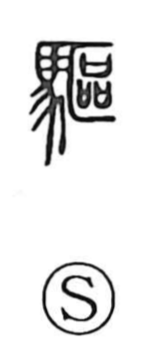

駆

Uncategorized
Kun: kakeru, karu, ou | On: ku
to drive ・ to chase ・ to gallop ・ to spur on ・ to exorcise
Explanation
Originally written 驅, this is a phono-semantic character: the horse element signals movement by horse, while the right-side component 區 supplies the sound and a core image. 區 depicts three covenant vessels set in a hidden place, the site of prayer and purification rites to ward off evil. From that sacred sense arose the meanings “to drive away” and “to exorcise.” In compounds such as senku, it reflects the old practice of sending a rider ahead of the main force to purify the road and confirm safety; when leaving one’s territory, it was even customary to have someone from another people lead the way as an apotropaic guide. Later the meaning broadened to making a horse—or by extension anything—run hard: to gallop, to drive, and to spur on.